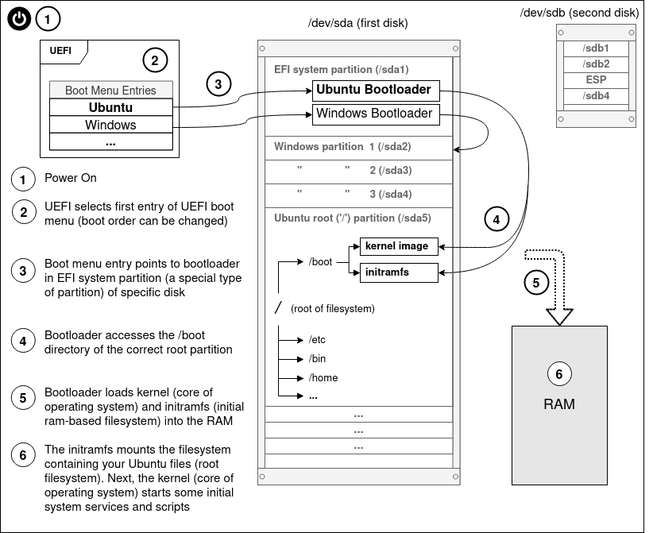
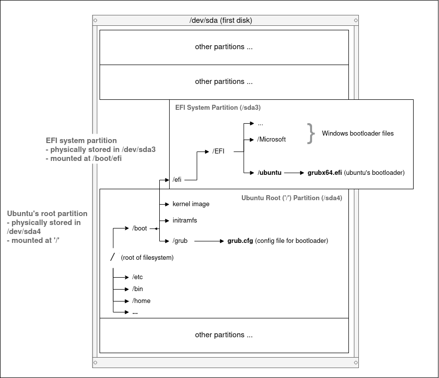
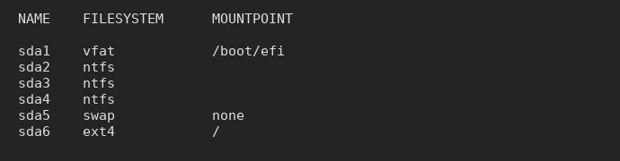

Basics/
Installation and Boot Process
Introduction
This guide simplifies the Linux boot process to include only the
details important to forming a mental model of the boot process.
It provides concise illustrations to explain the following:
- how Linux boots after turning on the power
- partitioning and mounting
- every step of Linux setup and final goal of installation
When assembling an IKEA cupboard, most people have some idea of
what every step is supposed to achieve, and what the final product
is supposed to look like. However, when dual-booting Linux and
Windows for the first time, many people are not sure what each
step is supposed to perform, or what the final system setup is
supposed to resemble.
Most guides do not explain the steps or the final goal well. Many
people feel 'lost', and that is understandable. You have no way of
checking if you had correctly performed the earlier steps, or if
you had accidentally made a mistake prior. Also, you have no idea
if the specific steps and options you were asked to select by the
guide are suited for your particular system and needs. Right
before clicking the install button, you are *still* uncertain if
everything has been set up correctly...
The guide is applicable to most distributions of Linux. Ubuntu is
used as an example here as it is quite common and user-friendly.
Boot Process

UEFI and firmware
UEFI
-
small piece of code stored on the motherboard
- launches bootloaders [1]
-
each UEFI boot menu entry points to a bootloader, usually found
in an EFI system partition.
EFI system partition (ESP)
EFI system partition (ESP)
-
a 'special' partition of a storage disk that contains
bootloaders
Partitioning
Partitioning
-
partitioning divides a storage disk into sections (partitions)
-
partitioning is 'logical', not an actual physical dividing of
the disk
-
the partitioning table (layout) can be reset or changed
Filesystem
Filesystem
-
organizes data stored on a disk partition
-
allows data to be interpreted in a logical manner, rather than
just looking like random 0s and 1s
-
the different filesystem types are different ways of organizing
your data
Mounting

EFI System Partition (ESP)
-
contains Windows bootloader
-
contains Ubuntu bootloader, which is responsible for loading
Ubuntu's linux kernel and initial filesystem
-
physically located at /dev/sda3, the third physical partition of
the disk
-
usually mounted at mountpoint /boot/efi, allowing Ubuntu to
access its files after the operating system boots
Mounting
-
attach a disk partition (and its filesystem) at a specified
mount point,
-
allowing read/write of files stored on the partition from that
mountpoint
Bootloader
-
loads the kernel (the core of the operating system) into RAM and
-
loads the initial ram-based filesystem (initramfs) into RAM
Grub Bootloader
-
Ubuntu's default bootloader (there are alternative bootloaders)
-
grubx64.efi => bootloader binary file that is executed by UEFI
-
grub.cfg => configuration file used to change options (configs)
for the grub bootloader
What happens when you click "Install Now"
-
a bootloader is added to your EFI system partition by Ubuntu
-
a UEFI boot menu entry is added, pointing at the newly added
bootloader in your ESP
Partitioning Setup End Result

This is just an example. The partition names (e.g. "sda1") may not
match yours. "sda" refers to the first disk that is detected (as
opposed to "sdb", "sdc", ...) . sda1 refers to the first partition
of the first disk (as opposed to "sda2", "sda3", ...).
-
vfat partition is your ESP partition
-
ntfs partitions belong to Windows
-
the
swap
partition, in simple terms, allows files and objects residing in
RAM to be 'swapped' to the storage drive, thus extending the RAM
-
ext4 partition is used for storing your Ubuntu (Linux) files
(root partition)
Ubuntu requires 2 partitions minimally, in total:
-
one EFI system partition (/boot/efi)
-
one root mountpoint (/)
EFI system partition (ESP)
-
vfat filesystem type (otherwise fat12, fat16, fat32)
-
'/boot/efi' mountpoint, usually (there exist other possible
mountpoints)
-
if Windows is already installed, re-use the existing ESP that
came along with Windows. Ubuntu will install its bootloader
alongside Window's
-
for Ubuntu and some other Linux distros, the installer will
auto-detect (and auto-mount) the ESP for you. You might not have
to worry about the ESP or bootloader at all
'/' (root) mountpoint
-
ext4 filesystem type
-
'/' mountpoint
-
ensure that the correct physical partition has been selected.
The installer will reset all data on this partition
Additional Info
-
UEFI launches
EFI applications, which includes more than just bootloaders. UEFI firmware is
capable of loading the Linux kernel directly as an executable
into RAM. See
EFISTUB
for more info.
References
-
ArchWiki - Arch Boot Process
-
ArchWiki - UEFI
-
ArchWiki -Bootloader
-
ArchWiki - GRUB bootloader
-
Gentoo Wiki - GRUB bootloader
-
ArchWiki - EFI system partition (ESP)
-
AdamW - UEFI
-
Wikipedia - UEFI
Final Notes
This explanation of the Linux installation and boot process is
targeted at newcomers to Linux. The extensive use of illustrations
is something I find most other guides lack. I would appreciate any
feedback, and corrections if I have made any mistakes. Apologies
in advance if I have!
Email:
sky100aw@gmail.com